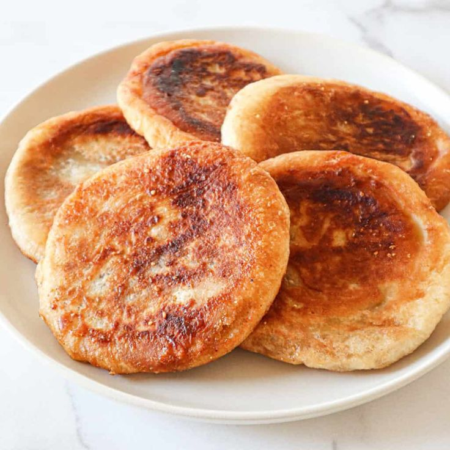
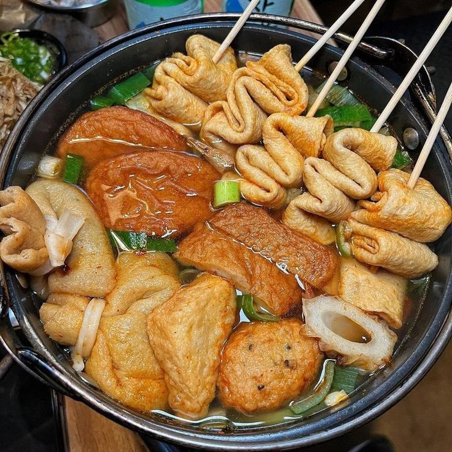
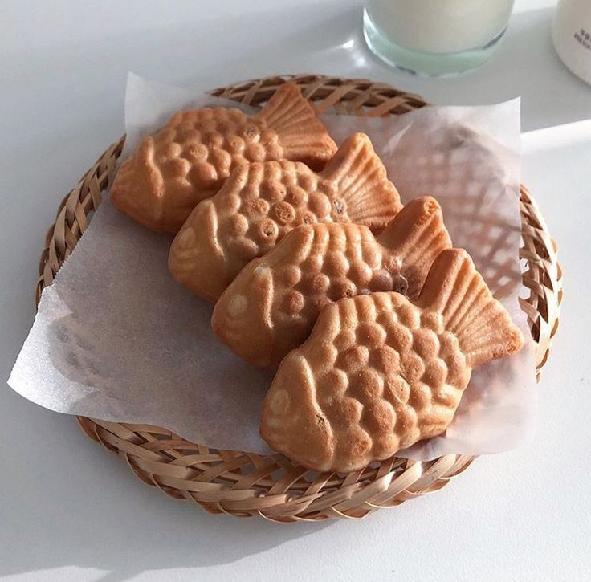
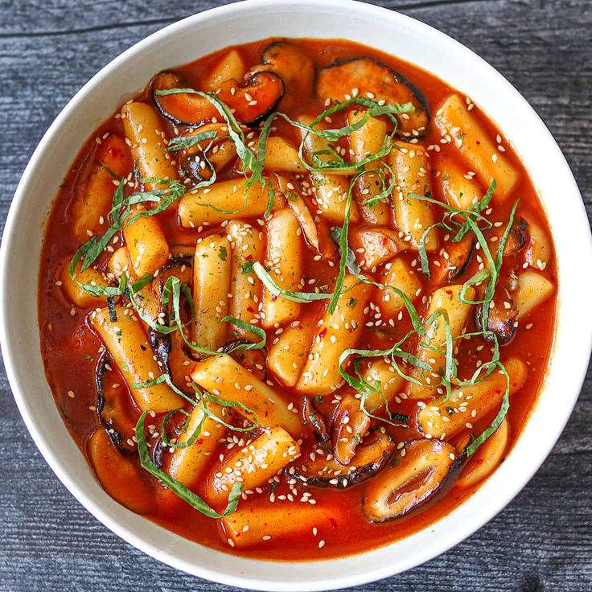

Halo Sobat nyemil! Apa kabar? ingin tau rekomendasi Korean Street Food?
Sebagai sobat nyemil, tentu kamu sudah tidak asing lagi dengan berbagai makanan korea dibawah ini. Ada banyak sekali makanan yang dijual dipinggir jalan untuk para sobat nyemil, kamu tidak perlu khawatir karena kami akan membagikan 5 rekomendasi makanan korea. Mari kita simak apa saja 5 Korean Street Food untuk para sobat nyemil!
1. Ramyeon

Korean street food ramyeon adalah salah satu camilan jalanan populer di Korea Selatan. Ini merupakan variasi dari hidangan mie instan populer di Korea yang disebut "ramyeon." Namun, perbedaan utama antara ramyeon yang biasa dimakan di rumah dan ramyeon jalanan adalah penyajiannya yang cepat, praktis, dan cocok untuk makan di luar.Biasanya, penjual makanan jalanan akan mempersiapkan ramyeon dengan cara berikut, mereka akan memasukkan mie ramyeon instan ke dalam panci berisi air mendidih, lalu memasaknya hingga mie menjadi lembut. Setelah mie matang, mereka akan membuang sebagian air, kemudian menambahkan bubuk bumbu dari kemasan ramyeon instan atau campuran bumbu pedas khusus yang disukai banyak orang. Beberapa penjual juga menambahkan bahan tambahan seperti potongan telur rebus, potongan sosis, potongan kimchi, dan sayuran segar seperti daun bawang atau kecambah. Mie dan bahan-bahan tersebut kemudian dicampur bersama dalam panci hingga tercampur rata. Ramyeon jalanan ini memiliki cita rasa pedas yang kuat dan nikmat. Biasanya, mie ini disajikan dalam mangkuk atau wadah berbentuk mangkuk yang dapat dibawa ke mana-mana dengan mudah. Ini adalah makanan jalanan yang sangat populer di Korea Selatan, terutama di musim dingin ketika cuaca lebih dingin, karena rasanya yang pedas dan hangat sangat cocok untuk menghangatkan tubuh. Banyak orang menikmati ramyeon jalanan sebagai camilan cepat, yang membuatnya menjadi salah satu kuliner jalan yang paling dicari oleh warga setempat dan wisatawan.
2. Hotteok
Hotteok adalah camilan jalanan populer di Korea Selatan yang terkenal dengan rasa manis dan tekstur yang lezat. Hotteok adalah kue goreng yang biasanya ditemukan di penjual makanan jalanan di seluruh Korea. Makanan ini terbuat dari adonan tepung terigu yang manis, yang diisi dengan campuran gula merah cair, kacang, dan sering kali biji wijen. Setelah diisi, kue ini digoreng dalam minyak hingga menjadi kecokelatan dan renyah di luar, dengan lapisan dalam yang lembut dan manis. Hotteok seringkali dijual di berbagai musim, tetapi terutama populer di musim dingin. Rasanya yang manis dan hangat membuatnya menjadi camilan yang nyaman ketika cuaca dingin. Kebanyakan penjual hotteok akan memasaknya secara langsung di depan pelanggan, sehingga Anda dapat menikmati hotteok segar yang masih hangat. Selain rasa manis klasik, ada variasi hotteok yang lebih modern, seperti hotteok cokelat, keju, atau green tea, yang menambahkan sentuhan modern pada hidangan tradisional ini. Hotteok adalah camilan yang sangat dicari baik oleh penduduk setempat maupun oleh wisatawan yang ingin mencicipi salah satu rasa autentik Korea Selatan di jalan-jalan kota.
3. Odeng
Odeng, juga dikenal sebagai eomuk, adalah camilan jalanan yang sangat populer di Korea Selatan. Camilan ini terbuat dari sosis ikan yang dibuat dari daging ikan cincang dan bahan tambahan seperti tepung terigu, tepung kanji, dan rempah-rempah. Makanan ini umumnya berbentuk silinder atau persegi panjang, mirip dengan sosis, dan biasanya memiliki tekstur yang sedikit kenyal. Odeng adalah hidangan yang cukup serbaguna dan dapat dinikmati dalam berbagai cara. Odeng disajikan dalam dua cara utama di Korea Selatan. Yang pertama adalah odeng rebus, di mana potongan odeng direbus dalam kuah pedas atau non-pedas yang kaya akan cita rasa. Kuah ini memberikan rasa yang lezat pada potongan odeng dan menjadikannya camilan yang sangat populer pada musim dingin. Yang kedua adalah odeng goreng, di mana potongan odeng dicelupkan dalam adonan tepung dan digoreng hingga kecokelatan dan renyah. Odeng goreng lebih cocok sebagai camilan cepat di luar ruangan. Salah satu aspek menarik dari odeng adalah cara membelinya. Di sepanjang jalan-jalan di Korea Selatan, Anda akan menemukan penjual odeng dengan potongan-potongan odeng yang dijajakan di tusuk sate. Anda dapat memilih potongan odeng yang Anda inginkan dan memasukkannya ke dalam cangkir plastik yang disediakan. Kemudian, Anda bisa meminta penjual untuk memasaknya dalam kuah pedas atau mendapatkan odeng goreng. Odeng adalah camilan yang populer di antara warga Korea Selatan dan sering dijadikan teman setia bagi mereka yang sedang berkeliling kota.
4. Bungeoppang
Bungeoppang, juga dikenal sebagai "kue ikan," adalah camilan jalanan yang populer di Korea Selatan. Nama "bungeoppang" berasal dari kata "bungeo" yang berarti ikan dan "ppang" yang berarti roti atau kue dalam bahasa Korea. Camilan ini terkenal karena bentuknya yang unik, yaitu menyerupai ikan kecil, yang terbuat dari adonan pancake atau waffle. Proses pembuatan Bungeoppang dimulai dengan mencetak adonan pancake atau waffle dalam cetakan berbentuk ikan yang terdiri dari dua potongan yang dihubungkan. Kemudian, cetakan tersebut diisi dengan berbagai bahan isi seperti pasta kacang merah manis, krim, selai cokelat, kacang, atau buah-buahan. Setelah diisi, kedua potongan cetakan ditekan bersama dan dipanggang hingga matang. Bungeoppang seringkali disajikan dalam kondisi hangat, sehingga saat Anda menggigitnya, Anda akan merasakan lapisan luar yang renyah dan bagian dalam yang lembut dengan isian yang lezat. Kue ikan ini memiliki cita rasa manis yang memuaskan, yang membuatnya menjadi camilan yang sangat disukai oleh orang-orang dari segala usia di Korea Selatan. Selain rasanya yang nikmat, bentuknya yang lucu juga membuatnya menjadi favorit anak-anak dan sering dijadikan oleh-oleh yang populer bagi wisatawan yang berkunjung ke Korea Selatan.
5. Tteokbokki
Tteokbokki adalah salah satu makanan jalanan paling ikonik dan populer di Korea Selatan. Nama Tteokbokki berasal dari kata "tteok" yang berarti kue beras dan "bokki" yang berarti goreng. Makanan ini terbuat dari kue beras (tteok) yang digoreng atau dimasak dalam saus pedas khas Korea. Tteokbokki dikenal karena rasa pedas dan manis yang kuat. Tteokbokki terbuat dari tteok, yang adalah potongan-potongan kue beras berbentuk silinder atau oval. Mie dan bahan tambahan seperti sosis, telur, ikan, atau sayuran juga sering ditambahkan ke dalam saus Tteokbokki. Sausnya terbuat dari gochujang, yang adalah pasta cabai merah pedas, yang dicampur dengan bahan-bahan seperti gula, kecap, dan kaldu untuk memberikan rasa manis dan pedas yang khas. Makanan ini sering dijual di penjual makanan jalanan di seluruh Korea Selatan, dan ada berbagai variasi Tteokbokki. Beberapa orang lebih suka Tteokbokki yang lebih pedas, sementara yang lain menyukai variasi yang lebih manis. Ini adalah camilan yang sangat populer di kalangan penduduk setempat dan sering dijadikan camilan yang nikmat dan memuaskan, terutama bagi pecinta makanan pedas. Tteokbokki adalah hidangan yang hangat dan menggugah selera yang sering dinikmati sepanjang tahun di Korea Selatan.
Berikut adalah penjelasan singkat beeserta website terhubung mengenai 5 Korean Street Food, yang mana yang sobat nyemil sudah pernah coba, apakah kalian sudah tambah tau mengenai asal-usul nama, cara pembuatan, dan bahan yang digunakan untuk membuat aneka Korean Street Food di atas?
Nantikan artikel-artikel kami seputar kuliner manca negara dibelahan suduut kota dan daerah lainnya ya sobat nyemil!!!